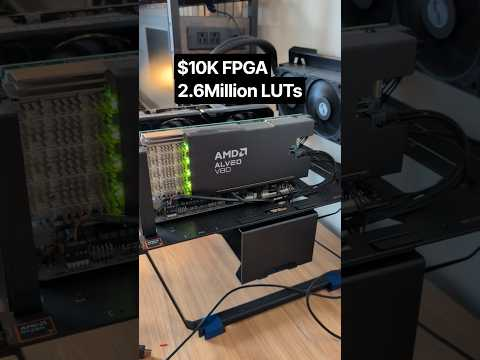
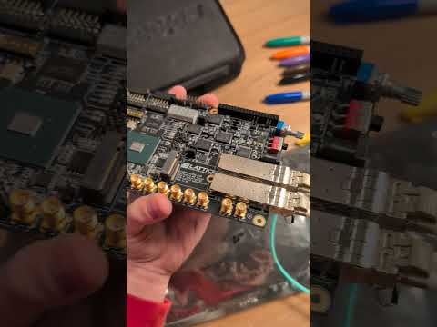
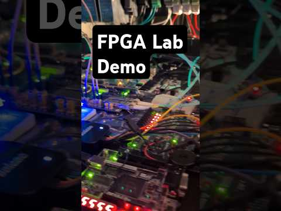

All Extras
Popular YouTube Shorts

This AMD FPGA is $10,000
Have You Seen this FPGA Board Before?
FPGA Transmitter Demo (Home Lab)
Upcoming posts
- My Journey into Computers
- Philisophy and Ethics - a Suprisingly Fun Class.
- 'AI' is insane and no one seems to care.
- The age of bloatware makes me sad.